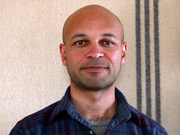

Profile
Research
Visualization

Hi, I'm Steven.
I am a
mixed methods researcher
. I also made
a documentary
about corruption in the Republic of Croatia.
I studied
applied psychology
at
Brown University
. Before that I studied
cinema and television production
at
USC Film School
.